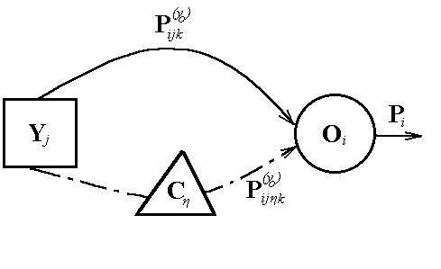
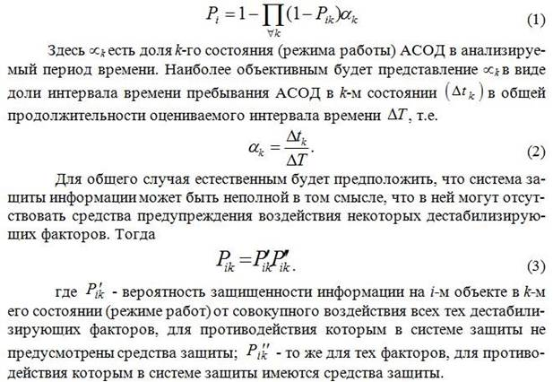
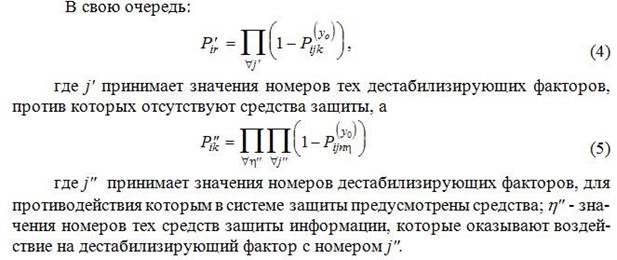
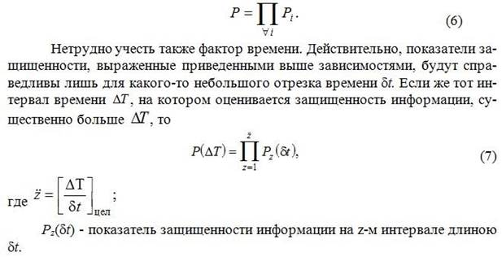
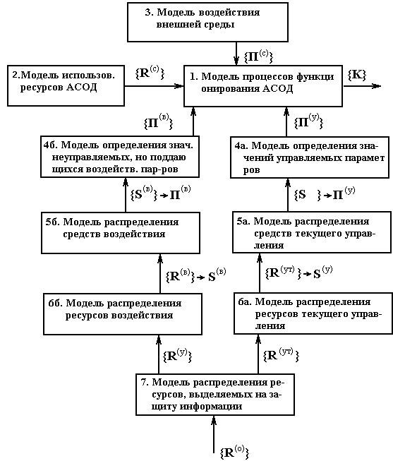
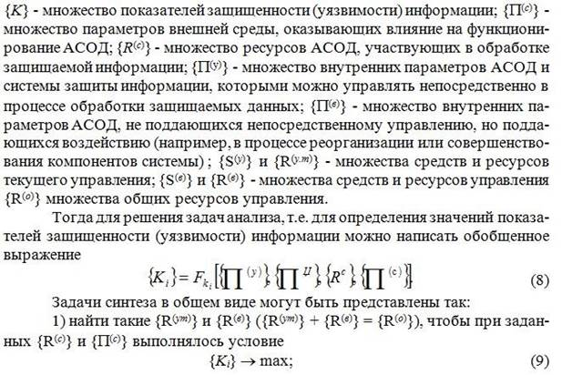
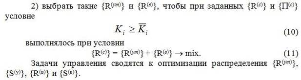
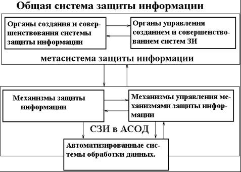
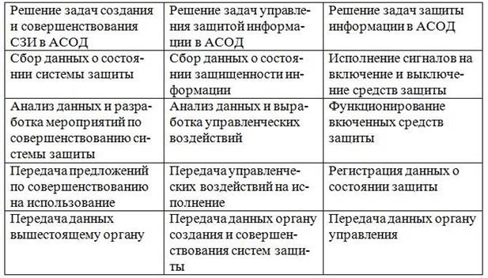

Общими моделями систем и процессов защиты информации названы такие, которые позволяют определять (оценивать) общие характеристики указанных систем и процессов в отличие от моделей локальных и частных, которые обеспечивают определение (оценки) некоторых локальных или частных характеристик систем или процессов. Основное назначение общих моделей состоит в создании предпосылок для объективной оценки общего состояния АСОД с точки зрения меры уязвимости или уровня защищенности информации в ней. Необходимость в таких оценках обычно возникает при анализе общей ситуации с целью выработки стратегических решений при организации защиты информации.
Системную классификацию общих моделей в настоящее время произвести практически невозможно, так как ввиду малого числа таких моделей для этого нет достаточных данных. Поэтому классификацию рассматриваемых моделей здесь представим простым перечнем и их краткой характеристикой, имея в виду, что их перечень является далеко не случайным, он отражает современное представление о реальной потребности в общих моделях.
В указанный перечень включены следующие модели:
1. Общая модель процесса защиты информации. Данная модель всамом общем виде и для самого общего объекта защиты должна отражать процесс защиты информации как процесс взаимодействия дестабилизирующих факторов, воздействующих на информацию, и средств защиты информации, препятствующих действию их факторов. Итогом взаимодействия будет тот или иной уровень защищенности информации;
2. Обобщенная модель системы защиты информации. Являясь дальнейшим развитием общей модели процесса защиты, обобщенная модель системы защиты должна отображать основные процессы, осуществляемые в ней с целью рационализации процессов защиты. Указанные процессы в самом общем виде могут быть представлены как процессы распределения и использования ресурсов, выделяемых на защиту информации;
3. Модель общей оценки угроз информации. Основной направленностью этой модели является оценка не просто угроз информации как таковых, а еще и оценка тех потерь, которые могут иметь месть при проявлении различных угроз. Модели данного направления важны еще тем, что именно на них в наибольшей степени были выявлены те условия, при которых такие оценки будут адекватны реальным процессам защиты информации;
4. Модели анализа систем разграничения доступа к ресурсам АСОД. Модели этого класса предназначены для обеспечения решения задач анализа и синтеза систем (механизмов) разграничения доступа к различным видам ресурсов АСОД и прежде всего – к массивам данных или полям ЗУ. Выделение этих моделей в самостоятельный класс общих моделей обусловлено тем, что механизмы разграничения доступа относятся к числу наиболее существенных компонентов систем защиты информации от эффективности функционирования которых в значительной мере зависит общая эффективность защиты информации в АСОД. В то же время по степени унифицированности рассматриваемые модели могут быть отнесены к разряду общих.
Кроме рассмотренных выше, в список общих моделей включена унифицированная схема статистической модели, хотя, вообще говоря, ее общность носит не функциональный, а методический характер. Но поскольку рассматриваемая там схема модели носит всеобщий универсальный характер и позволяет имитировать практически все механизмы и процессы защиты информации, она отнесена к разряду общих моделей.
В самом общем виде модель процесса защиты может быть представлена так, показано на рисунке 1. В соответствии с данной моделью обработка информации на объекте осуществляется в условиях воздействия на информацию угроз (дестабилизирующих факторов). Для противодействия угрозам информации могут использоваться специальные средства защиты, оказывающие нейтрализующее воздействие на дестабилизирующие факторы.
В общем случае на объект защиты в любом его состоянии имеется потенциальная опасность воздействия некоторой совокупности дестабилизирующих факторов.

Рис. 1. Общая модель процесса защиты информации
При этом характер и уровень воздействия одних факторов не зависит от характера и уровня воздействия других. Однако могут быть и взамозависимые факторы, характер и уровень воздействия которых существенно зависит от влияния других. Точно так же и средства защиты могут быть независимыми с точки зрения эффективности защиты, так и взамозависимыми. Таким образом, при разработке моделей процессов защиты информации надо учитывать не только воздействие дестабилизирующих факторов и средств защиты, но также и взаимное воздействие факторов и средств друг на друга.
С учетом обозначений, приведенных на рисунке 1, можно вывести такие зависимости.



Рассмотренная выше модель привлекательна своей простотой. Для определения показателей защищенности информации достаточно знать вероятностные характеристики дестабилизирующего воздействия на информацию различных факторов и эффективности функционирования средств защиты. Получение таких характеристик, хотя и сопряжено с преодолением значительных трудностей, тем не менее не является неразрешимой задачей. Однако помимо того существенного недостатка данной модели, который был отмечен выше (игнорирование) взаимодействия дестабилизирующих факторов и взаимовлияния средств защиты) в ней отсутствует также учет возможного ущерба от взаимодействия различных факторов, влияния проявления различных дестабилизирующих факторов на функционирование АСОД и некоторых других. Поэтому еще раз отметим, что данной моделью и моделями, подобными ей, надо пользоваться лишь для общих оценок при определении степени того внимания, которое должно быть уделено проблеме защиты информации.
Обобщенная модель системы защиты информации
Обобщенная модель системы защиты является следующей ступенью в развитии общей модели. Главным ее назначением является выбор основных ориентиров (принятие стратегических решений) при разработке перспективных планов построения систем защиты после того, как ее построение признано целесообразным. В соответствии с этим в рассматриваемой модели должны быть отображены те процессы, которые должны осуществляться в системе защиты. А поскольку центральным решением стратегического характера является оценка объема ресурсов, необходимых для обеспечения требуемого уровня защиты, и оптимальное их распределение, то в рассматриваемой модели определяющими должны быть именно процессы распределения ресурсов. Основой для ее построения являются общие цеди (задачи) защиты информации и условия, в которых осуществляется защита информации.
Цели защиты информации в самом общем виде могут быть сформулированы как построение оптимальных систем защиты информации и организации оптимального их функционирования. При этом понятие оптимальности интерпретируется в соответствии с общими постановками оптимизированных задач: при заданных ресурсах достигнуть максимального результата или обеспечить достижение заданного результата при минимальном расходовании ресурсов. Таким образом, в любом случае речь идет о наиболее рациональном использовании ресурсов, выделяемых или необходимых для защиты информации.
Условия, в которых осуществляется защита информации, могут быть представлены следующим образом. Защищенность информации определяется некоторыми показателями, которые в свою очередь определяются некоторыми параметрами системы и внешней среды. Всю совокупность параметров, определяющих значение показателей защищенности информации, в самом общем случае можно разделить на три вида: 1) управляемые параметры, т. е. такие, значения которых полностью формируются системой защиты информации; 2) параметры, недоступные для такого однозначного и прямого управления, как параметры, первого вида, но на которые система защиты может оказывать некоторое воздействие; 3) параметры внешней среды, на которые система защиты информации никаким образом воздействовать не может.
Тогда модель процесса защиты информации в самом общем виде представлена на рис. 2, на котором приняты следующие обозначения: {K} – множество показателей защищенности (уязвимости) информации; {Π(c)} – множество параметров внешней среды, оказывающих влияние на функционирование АСОД; {R(c)} – множество ресурсов АСОД, участвующих в обработке защищаемой информации; {Π(y)} – множество внутренних параметров АСОД и системы защиты информации, которыми можно управлять непосредственно в процессе обработки защищаемых данных; {Π(в)} – множество внутренних параметров АСОД, не поддающихся непосредственному управлению, но поддающихся воздействию (например, в процессе реорганизации или совершенствования компонентов системы); {S(у)} и {R(y.т)} – множества средств и ресурсов текущего управления; {S(в)} и {R(в)} – множества средств и ресурсов управления {R(о)} множества общих ресурсов управления.

Рис. 2 Общая модель процессов защиты информации
Тогда модель процесса защиты информации в самом общем виде представлена на рис. 2, на котором приняты следующие обозначения:


Нетрудно видеть, что возможны следующие модификации общей модели:
1) блоки 1, 2 и 3 – модель функционирования АСОД при отсутствии управления защитой информации; такая модель позволяет лишь определять значения показателей защищенности информации, т. е. решать задачи анализа;
2) блоки 1, 2, 3, 4а – модель текущего управления защитой информации; основу которого составляет оптимизация использования средств защиты, непосредственно включенных в состав АСОД. Такое управление может быть оперативно-диспетчерским и календарноплановым;
3) 1, 2, 3, 4а, 5а и 6а – модель управления ресурсами, выделеннымина защиту информации. Дополнительно к предыдущим задачам такая модель позволяет оптимизировать процесс формирования средств для текущего управления защитой информации;
4) блоки 1, 2, 3, 4б, и 5б – модель управления средствами воздействия на параметры, не допускающие текущего управления, но поддающиеся воздействию;
5) 1, 2, 3, 4б, 5б и 6б – модель управления ресурсами, выделенными на развитие АСОД;
6) все блоки – полная модель защиты. Дополнительно ко всем возможностям, рассмотренным выше, позволяет оптимизировать использование всех ресурсов, выделенных на защиту информации.
Таким образом, приведенная модель позволяет решать все задачи моделирования систем и процессов защиты информации. Однако, чтобы воспользоваться этой общей моделью, должны быть известны функциональные зависимости значений показателей защищенности от всех обозначенных на рис. 2 параметров и зависимость самих параметров от размеров ресурсов, вкладываемых в отображаемые ими процессы. Как известно, в настоящее время оба названные условия, вообще говоря, отсутствуют, что существенно ограничивает возможности практического использования рассмотренной модели. Для расширения этих возможностей в программе работ по защите информации должны быть предусмотрены (и притом в качестве приоритетных) работы по формированию и обоснованию необходимых функциональных зависимостей и сбору (определению) необходимых для их реализации.
Сказанное однако не означает, что рассматриваемой общей моделью нельзя пользоваться уже в настоящее время. В самом деле, поскольку и название выше функциональные зависимости и необходимые для их реализации данные в значительной мере могут формироваться целенаправленной деятельностью людей, поэтому опытные специалисты, варьируя как видами зависимостей, так и значениями необходимых величин, на этой основе могут получать с помощью модели весьма важные результаты.
Для реализации процессов, определяемых общей моделью защиты информации, и создаются системы защиты, процессами функционирования которых собственно и обеспечивается защита. Следовательно, общую модель защиты информации надо трансформировать в модель их функционирования, т. е. функциональную модель. Основой для построения названных моделей, естественно, должны служить основные положения рассмотренной в унифицированной концепции защиты информации в современных АСОД.
Для обоснования структура модели организационного построения системы защиты существенно важным является то обстоятельство, что защита информации в современных АСОД должна быть непрерывным и управляемым процессом. В соответствии с этим должны быть механизмы, с помощью которых осуществляется непосредственная защита информации в АСОД, и механизмы управления этими механизмами. Далее, поскольку есть системы управления, то должны быть системы создания систем защиты, которые в соответствии с современными концепциями управления (см., например [16]) должны быть внешними и более высокого уровня иерархии относительно создаваемых ими систем. Тогда обобщающую модель организационного построения системы защиты информации можно представить так, как показано на рис. 3. В соответствии с рис. 3 обобщенная ее функциональная модель представлена таблицей 1.

Рис. 3. Обобщенная модель организационного построения СЗИ
Таблица 1. Обобщенная функциональная модель СЗИ в АСОД
